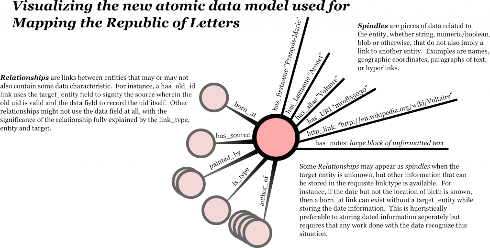

This project was developed in consultation with Nicole Coleman, ATS for the Humanities Center, and is a complete transition from a relational data model to a graph data model for the 80,000 entity MRL database. The original database tracked historical entities (documents, people, locations) from several sources, some of which were developed at Stanford and others acquired through partnership with institutions in Europe.


The graph or atomic data model for this project combined elements of a mathematical pseudograph with the RDF triples format, extended to include sophisticated temporal data.
Concurrent with the transition was the development of tools and methodologies for dealing with the new data model as well as the issues of temporal, geographic and evidenciary ambiguity. This necessitated the development of a novel system for tracking dates, handling unknown geographies and representing meaningful change over time. Further, under the auspices of the Mapping the Grand Tour sub-project, initial analysis and support for data creation was developed in a manner suitable to be built out to work with the larger project as a whole.
The database management system is MySQL, which has been optimized to perform the particular queries necessary for graph data.
Scripts have been developed using PHP to provide JSON-formatted output, for instance to the Simile Exhibit viewer. Further scripting to provide REST endpoints into the data has allowed for the development of URI pages for every entity in the database, as well as giving API access into the database for web developers. While these endpoints exist, further functionality has not been developed and will be created by the Humanities Center.
Success for digital humanities projects has always been difficult to gauge. However, user feedback, both among graduate students and scholars, has been uniformly positive. The database itself, though novel in its structure (especially among digital humanities projects) affords much more accurate representation of the notoriously asynchronous, asymmetrical and ambiguous data that typifies humanities scholarship, and does so with complex but extremely fast queries demonstrably capable of performing in a web-based environment. Web services access through endpoints assures that this data is not tied to any particular programming language or structure.